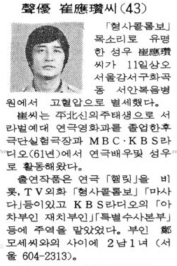
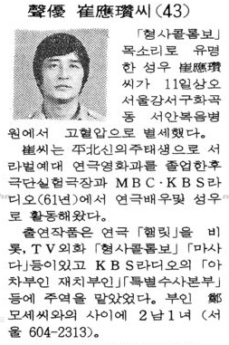
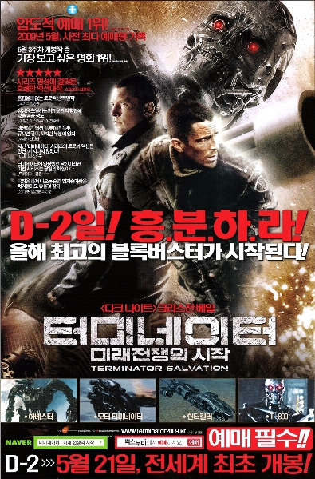
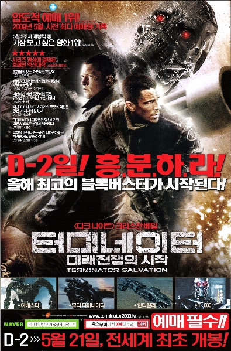

카테고리 : Pastime |
2009/07/22 팀 보로프스키, 베르더 브레멘으로 복귀 --;;
2009/06/30 성우 고 최응찬 선생님
2009/06/27 베른트 슈나이더, 선수 생활 은퇴
2009/06/22 돌아가시겠구나, 프리에그 -_-
2009/06/05 T4: Sam Worthington
2009/06/30 성우 고 최응찬 선생님
2009/06/27 베른트 슈나이더, 선수 생활 은퇴
2009/06/22 돌아가시겠구나, 프리에그 -_-
2009/06/05 T4: Sam Worthington
Rückkehr perfekt: Borowski unterschreibt für drei Jahre
2012.06.30까지 3년 계약이고 1년 연장 옵션.
조금 찾아봤는데 정확한 이적 조건은 빌트지에서조차 밝혀내지 못 한 듯.
어쨌든 이적료가 없지는 않겠지.
무상으로 보냈다가 1년만에 돈 주고 데려오다니
가난한 베르더 살림에 이 무슨 엿같은 일이란 말인가.
그리고 얘가 현재 베르더에 정말 필요하긴 한 건가.
샤프 감독님이 요즘 들어 얘가 돌아오기를 바란다는 말씀을 거듭하던 중이긴 했는데
미드필드을 어떻게 돌리시려고요??
두서없이 떠오르는 생각들:
- 이번 토요일이 베르더 브레멘 Tag der Fans인데 올 것인가?
- 어제 이번 시즌 단체 사진 찍었는데 올 거면 좀 빨리 와서 사진 같이 찍지 그랬냐.
- 그냥 브레멘에 있었으면 바우만이 은퇴한 지금 부주장 됐을텐데 이미 부주장은 메르테자커.
- 번호는 24번 달려나.
- 지난 시즌 24번이었던 피사로는?
- 전문 수미 정말 안 사는 건가요?
* 2009-07-23 아침에 추가.
아침에 일어나 보니 빌트에서 이적 조건을 보도했더라. 정확한 건지는 모르겠지만.
Für den bei Werder ausgebildeten Ex-Nationalspieler, der vor einem Jahr ablösefrei nach München ging, zahlt Bremen 750000 Euro. Dazu kommen Nachschlagszahlungen für jedes Erreichen der Champions League in den nächsten drei Jahren (maximal weitere 1250000 Euro).
일단 이적료는 0.75M 유로. 향후 3년간 CL 진출 시 추가로 1.25M 지급.
(번역기 돌려서 대충 이해하다보니 이게 CL 진출시마다 1.25M라는 건지 총액이 최대 1.25M라는 건지 잘 모르겠음 -_-;;)
In München hatte Borowski zwischen 3,5 und 4 Mio Euro verdient. In Bremen sollen es 2,5 Mio sein.
연봉은 바이에른에서는 3.5~ 4M 유로였지만 브레멘에서는 2.5M 유로.
연봉이 좀 과한 거 아니야 -_-+
* 2009-07-24 아침에 추가.
Tag der Fans는 커녕 오늘 새벽 FSV 프랑크푸르트와의 평가전에 벌써 나왔다. 그것도 선발로.
놀랍게도 등번호가 6번. 바우만 주장님 번호를 받다니. 정말 수미 영입 안 하고 얘를 수미로 쓸 건가.
혹시 24번은 피사로를 위해 남겨둔 것??
2012.06.30까지 3년 계약이고 1년 연장 옵션.
조금 찾아봤는데 정확한 이적 조건은 빌트지에서조차 밝혀내지 못 한 듯.
어쨌든 이적료가 없지는 않겠지.
무상으로 보냈다가 1년만에 돈 주고 데려오다니
가난한 베르더 살림에 이 무슨 엿같은 일이란 말인가.
그리고 얘가 현재 베르더에 정말 필요하긴 한 건가.
샤프 감독님이 요즘 들어 얘가 돌아오기를 바란다는 말씀을 거듭하던 중이긴 했는데
미드필드을 어떻게 돌리시려고요??
두서없이 떠오르는 생각들:
- 이번 토요일이 베르더 브레멘 Tag der Fans인데 올 것인가?
- 어제 이번 시즌 단체 사진 찍었는데 올 거면 좀 빨리 와서 사진 같이 찍지 그랬냐.
- 그냥 브레멘에 있었으면 바우만이 은퇴한 지금 부주장 됐을텐데 이미 부주장은 메르테자커.
- 번호는 24번 달려나.
- 지난 시즌 24번이었던 피사로는?
- 전문 수미 정말 안 사는 건가요?
* 2009-07-23 아침에 추가.
아침에 일어나 보니 빌트에서 이적 조건을 보도했더라. 정확한 건지는 모르겠지만.
Für den bei Werder ausgebildeten Ex-Nationalspieler, der vor einem Jahr ablösefrei nach München ging, zahlt Bremen 750000 Euro. Dazu kommen Nachschlagszahlungen für jedes Erreichen der Champions League in den nächsten drei Jahren (maximal weitere 1250000 Euro).
일단 이적료는 0.75M 유로. 향후 3년간 CL 진출 시 추가로 1.25M 지급.
(번역기 돌려서 대충 이해하다보니 이게 CL 진출시마다 1.25M라는 건지 총액이 최대 1.25M라는 건지 잘 모르겠음 -_-;;)
In München hatte Borowski zwischen 3,5 und 4 Mio Euro verdient. In Bremen sollen es 2,5 Mio sein.
연봉은 바이에른에서는 3.5~ 4M 유로였지만 브레멘에서는 2.5M 유로.
연봉이 좀 과한 거 아니야 -_-+
* 2009-07-24 아침에 추가.
Tag der Fans는 커녕 오늘 새벽 FSV 프랑크푸르트와의 평가전에 벌써 나왔다. 그것도 선발로.
놀랍게도 등번호가 6번. 바우만 주장님 번호를 받다니. 정말 수미 영입 안 하고 얘를 수미로 쓸 건가.
혹시 24번은 피사로를 위해 남겨둔 것??
# by 파이 | 2009/07/22 23:46 | Pastime
먼저, 예전에 다른 곳에 끼적여 두었던 것을 옮긴다.
----------------------------------------------------
2006-06-06
KBS 현충일 특집(?) [누구를 위하여 종은 울리나]
게리 쿠퍼는 유강진, 잉그리드 버그먼은 장유진이 더빙한 거야 놀랍지 않았는데,
'안셀모'라는 주요한 조연의 목소리가 최응찬 선생님이 아닌가!
대략 20년 전에 더빙했던 거 그대로 방영했다는 얘기.
생각난 김에 최응찬 선생님이 정확하게 언제 별세하셨는지 좀 알아보려고 했으나 실패.
이놈의 신문사 DB들의 검색 능력이란 정말이지 좌절스럽다.
지식 검색에서는 누가 최응찬 선생님 부인이 장유진이라고 헛소리를 써 놓지를 않나.
----------------------------------------------------
얼마전에 생긴 네이버의 옛날 신문 검색에서 드디어 알아냈다.
경향신문 1984년 9월 11일자 2면.

참으로 개성적이고 멋진 목소리의 주인공이셨는데
너무 아까운 나이에 가셨다.
----------------------------------------------------
2006-06-06
KBS 현충일 특집(?) [누구를 위하여 종은 울리나]
게리 쿠퍼는 유강진, 잉그리드 버그먼은 장유진이 더빙한 거야 놀랍지 않았는데,
'안셀모'라는 주요한 조연의 목소리가 최응찬 선생님이 아닌가!
대략 20년 전에 더빙했던 거 그대로 방영했다는 얘기.
생각난 김에 최응찬 선생님이 정확하게 언제 별세하셨는지 좀 알아보려고 했으나 실패.
이놈의 신문사 DB들의 검색 능력이란 정말이지 좌절스럽다.
지식 검색에서는 누가 최응찬 선생님 부인이 장유진이라고 헛소리를 써 놓지를 않나.
----------------------------------------------------
얼마전에 생긴 네이버의 옛날 신문 검색에서 드디어 알아냈다.
경향신문 1984년 9월 11일자 2면.

참으로 개성적이고 멋진 목소리의 주인공이셨는데
너무 아까운 나이에 가셨다.
# by 파이 | 2009/06/30 23:53 | Pastime
ㅠㅠ
레버쿠젠 선수로서도 아쉽지만,
부상으로 결국 참가할 수 없었던 유로 2008은 너무나 아쉽다.
수고 많으셨습니다.
앞날에 축복이 있기를.
레버쿠젠 선수로서도 아쉽지만,
부상으로 결국 참가할 수 없었던 유로 2008은 너무나 아쉽다.
수고 많으셨습니다.
앞날에 축복이 있기를.
# by 파이 | 2009/06/27 20:36 | Pastime
http://www.freeegg.com/
4월인가 사이트 정비한다고 동영상 업로드가 안 되다가,
과감하게 6월 15일까지 사이트 닫고 싹 정비한다고 했었다.
아예 잊고 살다가 6월 15일에서도 한참 지난 오늘 접속해보니
재개장은 커녕 아예 사이트 접속 자체가 안 된다.
검색을 좀 해보니 흉흉한 말만 떠돌고 있고.
없어질때 없어지더라도 최소한 자료를 백업할 수 기회는 줘야하는 거 아닌가?
물론, 내가 제대로 읽었을 리가 없는 -_- 사용 약관에
자료 백업할 시간과 방법을 사용자에게 제공할 책임은 회사 측에 없다고 되어 있을 것으로 예상되긴 한다만.
다 그만두고, 정말 문 닫는 건지 어떤 건지 공식적인 발표라도 좀 해주시지요.
갑자기 문 닫게 되어도 알릴 의무는 없다고 약관에 나와 있기라도 했나.
# by 파이 | 2009/06/22 15:21 | Pastime
[터미네이터: 미래 전쟁의 시작].
감상은 접어둔다. 이 글의 주제는 T4가 아니라 샘 워딩턴이기 때문.
+ 오늘의 수확 샘 워딩턴. 호주 출신인데다가 (테스토스테론이 말라버린 요즘 헐리우드는 호주에 가서 남자배우 데려오는 데에 맛들인 거 같음) 예고편 보고도 호감이었지만 실제 영화 보면서는 클로즈업될 때마다 소리지를 뻔했다. 미샤랑 많이 닮았어! 얼굴이 미샤 + 러셀 크로우 + 션 빈 느낌이니 우리로서는 환상의 조합. 연기도 괜찮고 나이도 미샤랑 같다.키가 그다지 크지 않은 게 유일한 아쉬움이다. (IMDb에 178 cm이라고 되어있어서 보기보다 작네...했는데 지금 다시 가보니 이게 웬일. 188 cm로 수정되어 있다. 그런가 하면 어느 팬 사이트에서는 180 cm란다. 진실은 저 너머에) 지나치게 테크놀로지적인 면만 부각될 거 같아서 별 관심 없었던 제임스 카메론의 [Avatar]를 이제 열렬히 응원하게 되었다. [Clash of the Titans]은 사실 기대가 크게 안되고 괴작 신세만 면하면 좋겠다. RT 지수 30%만 넘겨라.
+ 18개월째 미친 듯이 일만 하고 있다는데 아마 지금쯤이면 군인 역할이 쏟아져 들어오고 있으리라 짐작된다. 경력이 마이클 빈처럼 되지는 않기를 빈다.
+ 여기에 가면 [Clash of the Titans] 샘 워딩턴 사진 한 장 있다. Empire에 실려서 처음 유출된 사진임. 근데 사진은 그렇다치고 영화 줄거리가 써 있는데 상당히 괴이하다. "하데스 죽이러 지옥가겠습니다"냐;; 페르세우스하면 전통적으로 떠오르는 메두사 얘기는 어디로. 어쨌든 저 줄거리대로라면 이건 완전 워딩턴이 주연임. 81년작 오리지널도 저 스토리인가 궁금해져서 IMDb 찾아보니 거기서는 하데스는 나오지도 않고 바다의 여신 테티스 (무려 매기 스미스)가 악역이더라. 특수효과 담당이 레이 해리하우젠이었고. 테티스의 아들이 (뭐야 이거 아킬레스가 아니란 거냐;;) 안드로메다와 약혼한 사이였는데 페르세우스(해리 햄린 -- 이 배우는 마초적인 면이 너무 부족한데)가 끼어드는 바람에 분노한 테티스가 어쩌고 저쩌고... 오리지널도 줄거리가 뭐 안드로메다 급이었던 듯. 그리스 신화를 영화로 만들 때 왜들 그리 많이 뜯어고치는지 모르겠다. 원작 그대로 가도 폭력과 불륜이 넘쳐나고;; 충분히 재미있게 만들 수 있을 거 같은데. 사람들이 이미 다 아는 스토리라고 해서 보러 안 오는 것도 아니고. 이번 영화는 그나마 괴물을 많이 등장시키겠다는 속셈이로구나 싶어 이해가 가기도(?) 하는데, [트로이]는 정말 짜증났었다.
+ 워딩턴에게 관심 갖는 게 우리만은 아니라는 증거. 우리나라 판 T4 광고 변화를 보시라 ;-)
2009년 5월 19일

2009년 6월 2일

+ 모 영화잡지 기자가 자신의 블로그에 올린 T4 단평 말미에 이렇게 말했다: "크리스챤 베일보다는 마커스 역의 샘 워딩턴이 좋다. 아니, 새로운 호주출신 터프가이 수퍼스타 탄생이다. 곧 특급배우가 될 게 틀림없다."
감상은 접어둔다. 이 글의 주제는 T4가 아니라 샘 워딩턴이기 때문.
+ 오늘의 수확 샘 워딩턴. 호주 출신인데다가 (테스토스테론이 말라버린 요즘 헐리우드는 호주에 가서 남자배우 데려오는 데에 맛들인 거 같음) 예고편 보고도 호감이었지만 실제 영화 보면서는 클로즈업될 때마다 소리지를 뻔했다. 미샤랑 많이 닮았어! 얼굴이 미샤 + 러셀 크로우 + 션 빈 느낌이니 우리로서는 환상의 조합. 연기도 괜찮고 나이도 미샤랑 같다.
+ 18개월째 미친 듯이 일만 하고 있다는데 아마 지금쯤이면 군인 역할이 쏟아져 들어오고 있으리라 짐작된다. 경력이 마이클 빈처럼 되지는 않기를 빈다.
+ 여기에 가면 [Clash of the Titans] 샘 워딩턴 사진 한 장 있다. Empire에 실려서 처음 유출된 사진임. 근데 사진은 그렇다치고 영화 줄거리가 써 있는데 상당히 괴이하다. "하데스 죽이러 지옥가겠습니다"냐;; 페르세우스하면 전통적으로 떠오르는 메두사 얘기는 어디로. 어쨌든 저 줄거리대로라면 이건 완전 워딩턴이 주연임. 81년작 오리지널도 저 스토리인가 궁금해져서 IMDb 찾아보니 거기서는 하데스는 나오지도 않고 바다의 여신 테티스 (무려 매기 스미스)가 악역이더라. 특수효과 담당이 레이 해리하우젠이었고. 테티스의 아들이 (뭐야 이거 아킬레스가 아니란 거냐;;) 안드로메다와 약혼한 사이였는데 페르세우스(해리 햄린 -- 이 배우는 마초적인 면이 너무 부족한데)가 끼어드는 바람에 분노한 테티스가 어쩌고 저쩌고... 오리지널도 줄거리가 뭐 안드로메다 급이었던 듯. 그리스 신화를 영화로 만들 때 왜들 그리 많이 뜯어고치는지 모르겠다. 원작 그대로 가도 폭력과 불륜이 넘쳐나고;; 충분히 재미있게 만들 수 있을 거 같은데. 사람들이 이미 다 아는 스토리라고 해서 보러 안 오는 것도 아니고. 이번 영화는 그나마 괴물을 많이 등장시키겠다는 속셈이로구나 싶어 이해가 가기도(?) 하는데, [트로이]는 정말 짜증났었다.
+ 워딩턴에게 관심 갖는 게 우리만은 아니라는 증거. 우리나라 판 T4 광고 변화를 보시라 ;-)
2009년 5월 19일

2009년 6월 2일
+ 모 영화잡지 기자가 자신의 블로그에 올린 T4 단평 말미에 이렇게 말했다: "크리스챤 베일보다는 마커스 역의 샘 워딩턴이 좋다. 아니, 새로운 호주출신 터프가이 수퍼스타 탄생이다. 곧 특급배우가 될 게 틀림없다."
# by 파이 | 2009/06/05 09:04 | Pastime
| < 이전페이지 | 다음페이지 > |